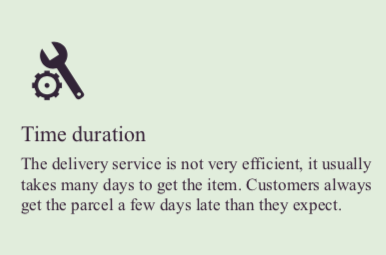
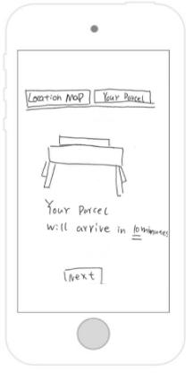
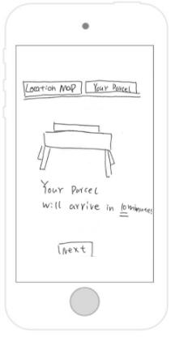

My Portfolio
Welcome to my portfolio page
Introduction
In this society, people are more likely to use e-commerce to buy and sell products instead of shopping in store. E- commerce offers an efficient way for individuals, they do not need to go outside to get their desired product, click on the mobile and the parcel would deliver to the address. The way of shopping online is convenient and time saving, it helps users improve life quality in some way. Based on the research and evaluation, loss of parcel is our main problem to solve. There are various reasons lead to loss of the parcel. First and the most frequently happening case is sending to a wrong destination. As drop and go is quite common in Australia, if the parcel is dropped at a wrong place, everyone is going to ignore it. As a result, the original recipient can hardly track or even get the parcel. The number of transitions is another reason contributes to the loss of item. Based on an estimation, more than 80% of operation is done manually. Those operations include receiving, put away, storage, picking, and shipping (Dewa, Pujawan & Vanany, 2017). Various human errors happened in warehousing operations give rise to picking the wrong item or losing the item. Precisely, the more station the parcels go through, the higher possibility they get lost, vice versa.
Description of solution
Background and potential
Self-driving trucks are being eyed by parcel delivery service providers around the world, and the drone technology is the trend in these days. For customers, drone delivery seems faster, and time saving compared to the normal delivery service. For retailers, it is a more environmentally friendly, cheaper and efficient future. And new technology is a way to attract more customers.
Solution
The solution is to create a screen-based smart phone application targeting receivers.
Design process
1. User research
User research on delivery service. Background research on delivery industry.
2. Ideation and brainstorming
Three concepts were developed based on users’ needs.
3. Mockups and user evaluation
A clickable mockup was developed by InVision.
Key findings from user research
Ideation and brainstorming
Storyboard 1
Storyboard 2
Storyboard 3
Hand sketch
These concepts were then developed into wireframe by hand sketch
 

Digital wireframe
After created a rough hand sketched wireframe, a low fidelity digital wireframe is developed to create different interface solutions.
User evaluation
1. The interface is very simple and clear, but I think that viewing the package and scheduling the drone can be two interface options.
2. The drone interface of the drone arrives very well, which reminds me not to forget the parcel,
3. The user thinks the interface is clear and can have a button back to the home page.
4. There can be a home page listing all the features
5. Users think maps and camera functions are very practical, and it is convenient to book drones.
High-fidelity digital wireframe
Introduction
AutoV is designed to solve the problem that is currently in the delivery industry. Below is our original concept flow chart and design. And it will be further refined. We have got six major paths in our app, they are a brief description of the company, charges of using service, to start a delivery, to track the delivery, user’s profile and Q and A session.
InVision Prototype
Result
Layout
- Logo is very minimal, ease of use.
- User only need one homepage button in the bar menu.
- Background page are the same, maybe changed some of them.
- Textbox color could be changed.
- The button “Order a drone” is confusing.
Function
- Profile page is useless.
- Navigation menu can place more emphasis.
- Add an insurance page.
- realtime camera can be controlable.
- Staffs' contact number can be provided.
Flow
- Estimated time page could be seperate from the original page.
- Flow is easy to understand
Typography
- Font size for some page is too big.
- The font could be brighter, because the background is dark.
Recommendation
- Change the button “order a drone” to “start delivery”.
- Minimize the numbers of button in the bar menu.
- Using background for distinguishing functions.
- Optimize fonts attribute.
- Add more functions in profile page.
- Modernize the border
Refined design
Introduction
This is the second iteration for AutoV. Based on the user evaluation, key findings include typography, flow, function, layout. First, Attendances mentioned the contrast between fonts and background is not enough. We ,therefore, re-correct the color of textbox in order to emphasize the fonts. Next, we did some changes on layout according to what participants revealed. For example, in the “choose you parcel “ page, we altered the distance between each options which made the layout more understandable. Besides, we united the fonts into Montserrat because it has been being the first place in the ranking of “most frequently used font” in UI design. Extracted from our interview, font size is one of the problems. So we altered the fonts size as well. Second, in our refining, we didn’t altered much on the flow, we just change the title name from “ order a drone” to “start delivery”. As former is confusing that participants thought they could buy a drone through our apps. Last, participants mentioned the bar menu is a repeated function and can be removed. So we abandoned the switching function in bar menu and only kept one home button on it.
InVision Prototype
Result
- Future delivery” is something like I have not yet buy.
- Welcome page can be more elegant.
- Users seldom use the navigation bar.
- The appearance of the button can be better.
- Flow is easy to understand.
- Map function is great as user could actually know where the parcel is.
Recommendation
- Correct the word ”future delivery” to “in the warehouse”.
- Add a confirmation text to reminder user.
- Change the style of buttons.
- History of delivery can be added to profile page.
Final design
Design changed
In this refine, we changed the design based on the previous recommendation. Besides, we thickedend the border of the login button, We also rounded the corner of Parcel list and check box in order to maintain the consistancy and enlarged the "Next" button in every pages in order to guide the users what they should click on next.
Atomic Prototype
We tried to do a prototype on Atomic. However, there are some problem occured when we put it within an iframe(html element) and it is not solvable by us. This occurs because the host of atomic set something to deny when we tried to access it in a iframe. So, click HERE to tryout our prototype. Enjoy!
Reflection
Throughout the semester, I had collaborate with excellent team members that enabled the development of a significant concept – Delivery service app. In this society, people are more likely to use e-commerce to buy and sell products instead of shopping in store, and because of the rise in delivery industry, there are many problems come out. Hence, our design team have carried out user research which focus on receivers in delivery service. Through the user research, we gathered useful information from users and find user insights and needs through different analysis methods. Next, the ideation stage allowed our group to create several concepts that satisfied three types of target audience. After that, we have developed many interface designs through hand sketches, digital wireframe and digital mockups by SKETCH. We then conducted usability test by showing the digital mockup to the users and refinements were made based on their feedbacks. In conclusions, the final prototype improved the efficiency of the delivery service.